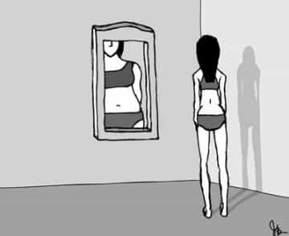
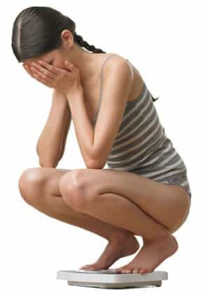

< < < Back
5 Reasons To Date A Girl With An Eating Disorder – Return Of Kings
Nothing screams white-girl problems louder than a good old-fashioned eating disorder.* But they’re more than that. Eating disorders have been—quite appropriately—declared a luxury reserved for only the most privileged members of the female race. In other words, the presence of one of the classic eating disorders is a reliable predictor of various socio-economic, cultural, and personality traits in a young woman–features that, in the end, are desirable to today’s American man. In a world where the “retail price” on the typical Western woman continues to skyrocket—while their quality continues its precipitous decline—there are some real gems to be found in the bargain bin.
I’ve dated several girls with eating disorders—in various intensities—and all of these traits have applied to each of them.
*While obesity is, in most cases, also an “eating disorder,” this list doesn’t apply to emotional eaters, food addicts, and fatties with no self control.
1. Her obsession over her body will improve her overall looks.
A girl who spends inordinate mental and physical energy on her looks is rarely fat. If you were to get into a long-term relationship with one of these girls, she’s also less likely to become complacent about her physique over time. Girls like this are usually deft at properly dressing their body type, which translates into a more stylish girl overall. And, because cheap clothing lines—like H&M—are shaped with straight cuts that are less labor-intensive and therefore more inexpensive, they look good in even the cheapest of shit. While they may have a “distorted body image” on the inside, that usually means staying trim and fit on the outside. Let’s not forget that fatties too, in the majority of cases, have a “distorted body image,” but in the unattractive direction.

2. She costs less money.
You can go out to nice restaurants and order take-out with the confidence that your expense on her will be minimal. In most cases, she’ll get a small dish–like a side salad–or just eat a little bit of whatever communal dishes you order. If you’re a hungry bastard, you can even finish off her plate. “Are you going to finish that?”
3. She’s fragile and vulnerable.
The case has repeatedly and persuasively been made that an inflated ego and an unearned high self-esteem are among the most unattractive traits in a girl. You-go-girlist “confidence”—grounded in little more than years of being told she’s a unique and special snowflake for no other reason than she was born female—renders a woman into an insufferable turd who thinks the world revolves around her.
An eating disorder often translates into the direct opposite: a girl who’s modest, fragile, and vulnerable. Instead of having to constantly wrestle with a difficult and obnoxious girl, you’ll be dealing with a tastefully insecure girl, who’s eager to please, and wants nothing more than your approval. She’s quick to apologize for transgressions, and will make the extra effort to see you–instead of flaking on you constantly. This level of vulnerability often brings out the best in men, whose protector instinct can’t help but get activated.

4. Probably has money of her own.
They aren’t too many poor girls with eating disorders. These girls come from money, and often continue to wield that spending power right into their adulthoods. Her instinct to please you will translate into her picking up tabs, coming to your door not empty-handed, or buying you little gifts.
5. She’s better in bed.
It’s a well-known fact that crazy girls are exceptional in the sack. A girl with an eating disorder has just the right cocktail of pent-up insecurity, neuroses, and daddy issues to ensure that your whole building knows every time you’re beating it up.
Say what you will, a girl with a mild-to-moderate eating disorder—that hasn’t excessively marred her appearance—is today’s best-buy in the West’s rapidly plummeting dating market.
Read More: The 15 Magical Years Of Womanhood


{kind=link}
{kind=link}